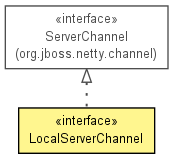

org.jboss.netty.channel.local
Interface LocalServerChannel
- All Superinterfaces:
- Channel, Comparable<Channel>, ServerChannel
public interface LocalServerChannel
- extends ServerChannel

A ServerChannel for the local transport.
- Version:
- $Rev: 2080 $, $Date: 2010-01-26 18:04:19 +0900 (Tue, 26 Jan 2010) $
- Author:
- The Netty Project, Andy Taylor (andy.taylor@jboss.org), Trustin Lee
| Methods inherited from interface org.jboss.netty.channel.Channel |
bind, close, connect, disconnect, getCloseFuture, getConfig, getFactory, getId, getInterestOps, getParent, getPipeline, isBound, isConnected, isOpen, isReadable, isWritable, setInterestOps, setReadable, unbind, write, write |
getLocalAddress
LocalAddress getLocalAddress()
- Description copied from interface:
Channel
- Returns the local address where this channel is bound to. The returned
SocketAddress is supposed to be down-cast into more concrete
type such as InetSocketAddress to retrieve the detailed
information.
- Specified by:
getLocalAddress in interface Channel
- Returns:
- the local address of this channel.
null if this channel is not bound.
getRemoteAddress
LocalAddress getRemoteAddress()
- Description copied from interface:
Channel
- Returns the remote address where this channel is connected to. The
returned
SocketAddress is supposed to be down-cast into more
concrete type such as InetSocketAddress to retrieve the detailed
information.
- Specified by:
getRemoteAddress in interface Channel
- Returns:
- the remote address of this channel.
null if this channel is not connected.
If this channel is not connected but it can receive messages
from arbitrary remote addresses (e.g. DatagramChannel,
use MessageEvent.getRemoteAddress() to determine
the origination of the received message as this method will
return null.
Copyright © 2008-2011 JBoss, a division of Red Hat, Inc.. All Rights Reserved.